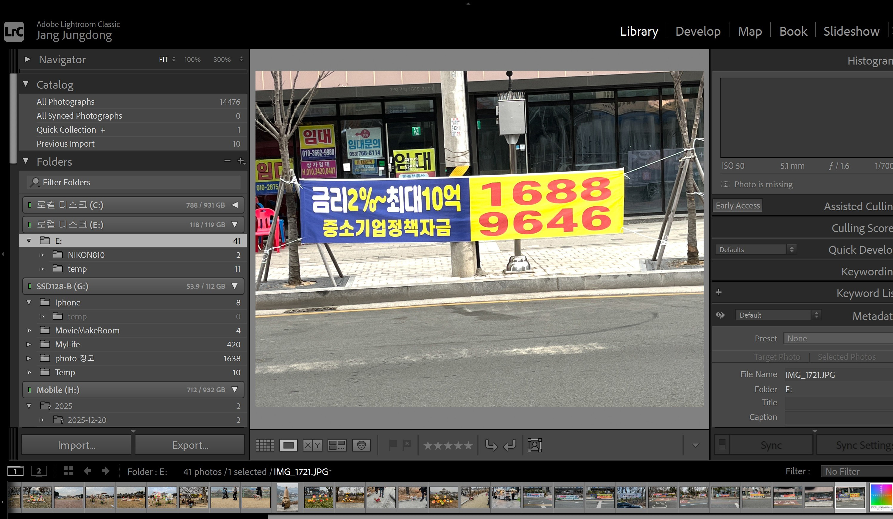

프로페셔널들은 어떤 프로그램을 사용하나?
사진에서 pc작업은 크게 두 가지로 나누어진다. 하나는 디지털사진을 관리하는 작업이고, 다른 하나는 디지털사진을 보정하는 작업이다. 이에 따라 관리를 위한 프로그램과 보정을 위한 프로그램을 선택해야 한다. 그런데 많은 사람들이 쓰는 포토샵은 어느 한쪽에도 포함되지 않는다. 포토샵은 이미지를 수정 • 편집하고 합성하는 프로그램이지 디지털사진을 보정하는 프로그램은 아니기 때문이다. 참고로 이미지와 디지털사진은 서로 다른 언어이다.
디지털사진 보정프로그램은 PIE(Parametric Image Editing)라 부른데, 디지털사진의 정보 값인 파라미터(Parameter)를 수정하는 방식으로 보정하며 그 과정이 데이터베이스에 저장된다. 픽셀기반으로 이미지를 편지하는 포토샵과는 다르다. 예를 들어, 노출을 보정한다면 노출정보의 파라미터 값을 수정하면 된다. 이러한 PIE 프로그램으로는 카메라 로(Camera Raw), 캡쳐 온 프로(Capture On Pro), 니콘 캡쳐(Nikon Capture)등이 대표적이다.
최근에는 디지털 사진 관리와 보정기능이 하나로 합쳐진 올인원(All In One)프로그램을 주로 사용하는데, 대표적으로 라이트 룸(Lightroom)과 에이피처(Aperture)f를 많이 사용한다. 이러한 프로그램으로 보정된 사진을 가지고 최종적으로 포토샵과 같은 이미지 편지프로그램에서 재편집 또는 합성 등을 한다.
[윈도우와 애플 플랫폼에서 모두 사용할 수 있는 올인원 PIE 프로그램인 라이트룸]
[참고문헌]
[1]프로페셔널 사진의 조건/라이트룸5, 백종수, 이지스퍼블리싱, 2013.11.14.
....
....
....
....
....
....